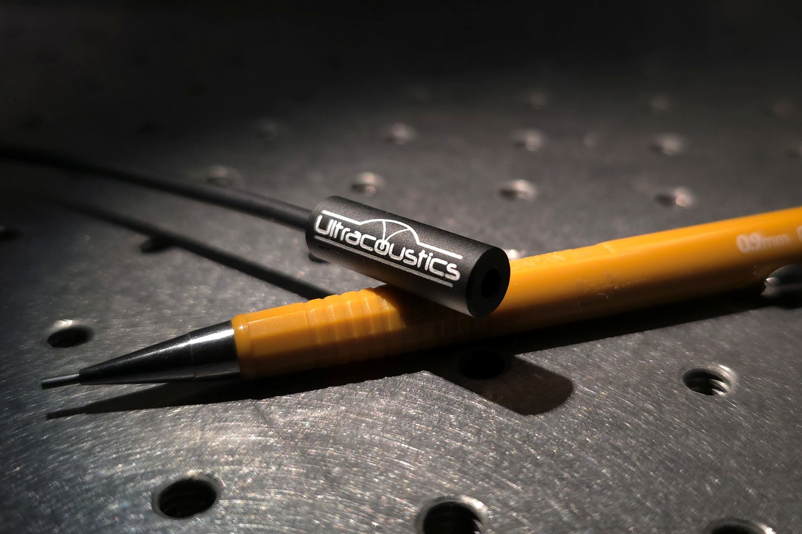

Application
Ultrasonic Cleaning Monitoring
Real-time, non-contact cavitation monitoring from above the tank. Detect transducer drift, degradation, and process anomalies before they affect part quality.

The Challenge
Ultrasonic cleaning effectiveness depends on consistent cavitation activity. But cavitation is invisible, and cleaning tanks degrade over time. Transducers lose power, fluid chemistry changes, temperature drifts, and mechanical wear affects coupling. Without monitoring, these changes go unnoticed until parts fail quality inspection.
Non-Contact Monitoring from Above
BROADSONIC monitors cavitation activity acoustically from above the cleaning tank with no submersion required. The sensor captures the full broadband spectrum of cavitation noise up to 5 MHz, providing rich diagnostic data about the cleaning process. Because it operates in air and never contacts the cleaning fluid, it requires no maintenance and does not interfere with the cleaning process.
What BROADSONIC Detects
- Transducer power degradation over time
- Uneven cavitation distribution across the tank
- Frequency drift in the cleaning transducers
- Process anomalies from fluid level, temperature, or chemical changes
- Sudden failures or intermittent transducer dropouts
From Reactive to Predictive
Continuous acoustic monitoring transforms cleaning QA from reactive pass/fail inspection to predictive maintenance. Trends in cavitation intensity, spectral content, and spatial distribution provide early warning of degradation, allowing corrective action before cleaning quality is compromised.
Comparison
How It Compares to Traditional Monitoring
| Method | Frequency Range | Contact Required? | Real-Time? | Spatial Info? |
|---|---|---|---|---|
| BROADSONIC | 20 Hz - 5 MHz | No (air-coupled) | Yes | Yes (scanning) |
| Hydrophone | Up to ~10 MHz | Yes (submerged) | Yes | Limited |
| Foil Erosion Test | N/A | Yes (submerged) | No (post-hoc) | Yes (but slow) |
| Calorimetric | N/A | No | No (batch) | No |
Supporting Research
Coupling the Thermal Acoustic Modes of a Bubble to an Optomechanical Sensor
Cavitation monitoring is fundamentally about bubble dynamics. This paper demonstrates optical sensing of individual bubble acoustic modes.
Download PDF →Evaluate BROADSONIC for Cleaning QA
Discuss your ultrasonic cleaning monitoring requirements and learn how non-contact acoustic sensing can improve process control and part quality.